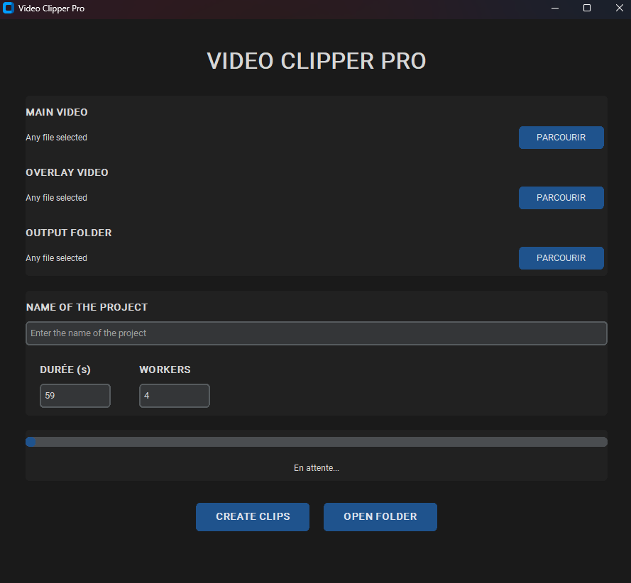
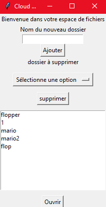

Bonjour, je suis
Romain Chevalier.
passionné de jeu vidéo.
Je suis élève en Terminale, passionné par les jeu vidéo et le codage. la conception des jeux vidéos m'a toujours passionné au plus haut point depuis mon plus jeune age, comprendre comment est fait un monde aussi vaste et riche qui transporte des millions de personnes dans un univers.
About me
élèves de terminale
j'ai choisi dès ma seconde mes spécialité en fonction de mon futur métier. j'ai donc choisi de prendre la NSI et les maths. en enlevant en première la physique chimie. je garde quand même toujours l'option de maths experts et mes cours de japonais qui me suive depuis la seconde.
ce que je sais faire
je code la majorité du temps en python, pour mes cours de NSI, je fais certains projets en python car il est simple à comprendre peut prendre en charges de nombreuse API et peut être utilisé avec d'autres langages de programmation. mais je suis aussi capable de coder en javascript. je suis capable de faire des sites web en html, css et en javascript. je possède de grandes base en SQL et database.
je suis capable de faire des jeux sur unity aussi bien en visual scripting que en c#, j'ai comme vous allez le voir plus bas des projets réalisé sur unity en visual scripting et en c#.
j'ai aussi fait un projet sur unreal engine en blueprint avec un système de coeur et d'escalade de n'importe quelle type de paroi.
mes compétences
Projets notables
Puissance 4
Un jeu de Puissance 4 développé avec Pygame, incluant une adaptation automatique de la taille, gestion des erreurs et système de victoire, mode 2 joueurs avec un changement de couleurs.
Mario en 2D

Recréation d'un niveau de Mario en utilisant des tableaux 2D, avec un système de mouvement innovant basé sur la manipulation de matrices. la génération de tableaux 2D par compréhension d'images.
Remake Zelda
Recréation de Link's Awakening sur Unity avec système de combat, inventaire et sauvegarde JSON. système d'inventaire et de swap d'arme à la Zelda.
short creation
un projet d'application pour couper de longues vidéos petits shorts. avec tkinter, python, cuda pour la Puissance des GPU nvidia et le multiprocessing.
isart summer school project
durant l'été 2024 je suis allé à la summer school de l'isart digital pour savoir si aller dans la voix du dévelloppement de jeu vidéo était bien ce que je souhaitais faire. j'ai donc pendant 2 semaines coder un jeu en 2D top down en visual scripting sur unity
cloud file explorer
un projet d'application de sauvegarde de document sécurisé par login, et qui peut stocker des documents et fichiers dans des dossiers
Node JS et react application
un projet sur node JS et react JS pour découper de petites vidéos en pleins de petites vidéos au format vertical, avec une vidéo en dessous.
le portfolio
je voulais faire un portfolio pour montrer aux écoles et futurs employeurs ce que je sais faire en termes de code et de projets, comme un site internet qui est celui sur lequel vous etes
unreal engine project
j'ai en 2022 commencer à apprendre comment coder en blueprint avant même de savoir coder dans un language, ce projet se concentre sur créer un sytème de vie, un personnage et un sytème d'escalade qui marcherait sur n'importe quelle mur ou plafond.
lettre de motivation
orientation
Je souhaite orienter ma future carrière vers les métiers du jeu vidéo en particulier dans le game programming et game design, je voudrais partir sur le bachelor game design et programming.
pourquoi vouloir travailler dans le jeu vidéo
je souhaite travailler dans le jeu vidéo car c’est une passion pour moi depuis tout petit, elle m’a poussée à me développer sur plein d’aspects de ma vie comme la tactique le temps de réflexion et la réflexion sur des problèmes complexes. les jeu vidéo comme Zelda ou Mario ou ghost of Tsushima m’ont prouvé qu’un problème pouvait être abordé de plusieurs façon très différentes.
mes spécialités
Passionné par les jeu-vidéo j'ai choisi dès la seconde mes spécialités en sachant le domaine dans lequel je voulais me diriger j'ai donc choisi comme spécialités "mathématiques" et "Numériques et sciences de l'informatique (NSI)" avec comme option le "japonais" et les "maths experts" car j'aime coder, trouver des solutions à des problèmes complexes qui prendrait du temps à une personne sans cette compétence pour réaliser cette tâche, automatiser ma vie grâce à certains programmes qui peuvent faciliter la vie de certaine personne ou faciliter mes problèmes. Coder peut aussi être un moyen amusant d'apprendre comment certaine chose marche et fonctionne comme une fusée de SpaceX un ordinateur avec un processeur et une carte graphique, étudier comment ces choses fonctionnent et sont construites de telles manière.
autres activités
Sensible aux matières artistiques, je prends aussi du temps pour dessiner et apprendre la shape et l'anatomie humaine, très créatif, que j'apprécie du fait du calme et de la dextérité que cela requiert. Je fais aussi du sport à coter pour garder la forme avec du roller et du parkour avec des séances de musculation en plus tout au long de la semaine.